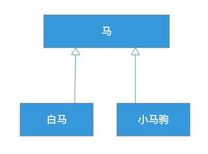
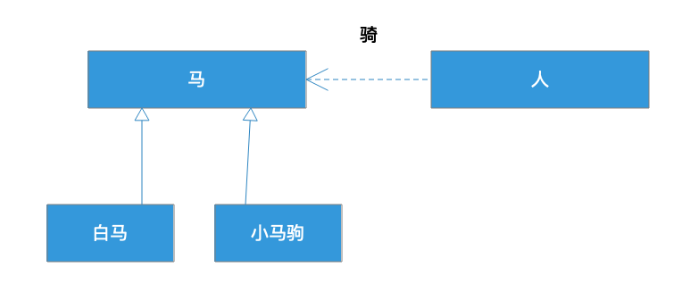
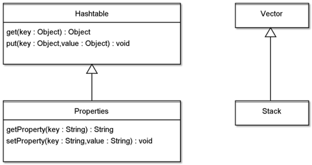

- 00 开篇词 掌握软件开发技术的第一性原理.md
- 01 程序运行原理：程序是如何运行又是如何崩溃的？.md
- 02 数据结构原理：Hash表的时间复杂度为什么是O(1)？.md
- 03 Java虚拟机原理：JVM为什么被称为机器（machine）？.md
- 04 网络编程原理：一个字符的互联网之旅.md
- 05 文件系统原理：如何用1分钟遍历一个100TB的文件？.md
- 06 数据库原理：为什么PrepareStatement性能更好更安全？.md
- 07 答疑 Java Web程序的运行时环境到底是怎样的？.md
- 07 编程语言原理：面向对象编程是编程的终极形态吗？.md
- 08 软件设计的方法论：软件为什么要建模？.md
- 09 软件设计实践：如何使用UML完成一个设计文档？.md
- 10 软件设计的目的：糟糕的程序员比优秀的程序员差在哪里？.md
- 11 软件设计的开闭原则：如何不修改代码却能实现需求变更？.md
- 12 软件设计的依赖倒置原则：如何不依赖代码却可以复用它的功能？.md
- 13 软件设计的里氏替换原则：正方形可以继承长方形吗？.md
- 14 软件设计的单一职责原则：为什么说一个类文件打开最好不要超过一屏？.md
- 15 软件设计的接口隔离原则：如何对类的调用者隐藏类的公有方法？.md
- 16 设计模式基础：不会灵活应用设计模式，你就没有掌握面向对象编程.md
- 17 设计模式应用：编程框架中的设计模式.md
- 18 反应式编程框架设计：如何使程序调用不阻塞等待，立即响应？.md
- 19 组件设计原则：组件的边界在哪里？.md
- 20 答疑 对于设计模式而言，场景到底有多重要？.md
- 20 领域驱动设计：35岁的程序员应该写什么样的代码？.md
- 21 分布式架构：如何应对高并发的用户请求.md
- 22 缓存架构：如何减少不必要的计算？.md
- 23 异步架构：如何避免互相依赖的系统间耦合？.md
- 24 负载均衡架构：如何用10行代码实现一个负载均衡服务？.md
- 25 数据存储架构：如何改善系统的数据存储能力？.md
- 26 搜索引擎架构：如何瞬间完成海量数据检索？.md
- 27 微服务架构：微服务究竟是灵丹还是毒药？.md
- 28 高性能架构：除了代码，你还可以在哪些地方优化性能？.md
- 29 高可用架构：我们为什么感觉不到淘宝应用升级时的停机？.md
- 30 安全性架构：为什么说用户密码泄漏是程序员的锅？.md
- 31 大数据架构：大数据技术架构的思想和原理是什么？.md
- 32 AI与物联网架构：从智能引擎到物联网平台.md
- 33 区块链技术架构：区块链到底能做什么？.md
- 33 答疑 互联网需要解决的技术问题是什么？.md
- 34 技术修炼之道：同样工作十几年，为什么有的人成为大厂架构师，有的人失业？.md
- 35 技术进阶之道：你和这个星球最顶级的程序员差几个等级？.md
- 36 技术落地之道：你真的知道自己要解决的问题是什么吗？.md
- 37 技术沟通之道：如何解决问题？.md
- 38 技术管理之道：你真的要转管理吗？.md
- 38 答疑 工作中的交往和沟通，都有哪些小技巧呢？.md
- 加餐 软件设计文档示例模板.md
- 结束语 期待未来的你，成为优秀的软件架构师.md
13 软件设计的里氏替换原则：正方形可以继承长方形吗？
我们都知道，面向对象编程语言有三大特性：封装、继承、多态。这几个特性也许可以很快就学会，但是如果想要用好，可能要花非常多的时间。
通俗地说，接口（抽象类）的多个实现就是多态。多态可以让程序在编程时面向接口进行编程，在运行期绑定具体类，从而使得类之间不需要直接耦合，就可以关联组合，构成一个更强大的整体对外服务。绝大多数设计模式其实都是利用多态的特性玩的把戏，前面两篇学习的开闭原则和依赖倒置原则也是利用多态的特性。正是多态使得编程有时候像变魔术，如果能用好多态，可以说掌握了大多数的面向对象编程技巧。
封装是面向对象语言提供的特性，将属性和方法封装在类里面。用好封装的关键是，知道应该将哪些属性和方法封装在某个类里。一个方法应该封装进A类里，还是B类里？这个问题其实就是如何进行对象的设计。深入研究进去，里面也有大量的学问。
继承似乎比多态和封装要简单一些，但实践中，继承的误用也很常见。
里氏替换原则
关于如何设计类的继承关系，怎样使继承不违反开闭原则，实际上有一个关于继承的设计原则，叫里氏替换原则。这个原则说：若对每个类型T1的对象o1，都存在一个类型T2的对象o2，使得在所有针对T2编写的程序P中，用o1替换o2后，程序P的行为功能不变，则T1是T2的子类型。
上面这句话比较学术，通俗地说就是：子类型必须能够替换掉它们的基类型。
再稍微详细点说，就是：程序中，所有使用基类的地方，都应该可以用子类代替。
语法上，任何类都可以被继承。但是一个继承是否合理，从继承关系本身是看不出来的，需要把继承放在应用场景的上下文中去判断，使用基类的地方，是否可以用子类代替？
这里有一个马的继承设计：

白马和小马驹都是马，所以都继承了马。这样的继承是不是合理呢？我们需要放到应用场景中：

在这个场景中，是人骑马。根据这里的关系，继承了马的白马和小马驹，应该都可以代替马。白马代替马当然没有问题，人可以骑白马，但是小马驹代替马可能就不合适了，因为小马驹还没长好，无法被人骑。
那么很显然，作为子类的白马可以替换掉基类马，但是小马不能替换马，因此小马继承马就不太合适了，违反了里氏替换原则。
一个违反里氏替换规则的例子
我们再看这样一段代码：
void drawShape(Shape shape) {
if (shape.type == Shape.Circle ) {
drawCircle((Circle) shape);
} else if (shape.type == Shape.Square) {
drawSquare((Square) shape);
} else {
……
}
}
这里Circle和Square继承了基类Shape，然后在应用的方法中，根据输入Shape对象类型进行判断，根据对象类型选择不同的绘图函数将图形画出来。这种写法的代码既常见又糟糕，它同时违反了开闭原则和里氏替换原则。
首先看到这样的if/else代码，就可以判断违反了开闭原则：当增加新的Shape类型的时候，必须修改这个方法，增加else if代码。
其次也因为同样的原因违反了里氏替换原则：当增加新的Shape类型的时候，如果没有修改这个方法，没有增加else if代码，那么这个新类型就无法替换基类Shape。
要解决这个问题其实也很简单，只需要在基类Shape中定义draw方法，所有Shape的子类，Circle、Square都实现这个方法就可以了：
public abstract Shape{
public abstract void draw();
}
上面那段drawShape()代码也就可以变得更简单：
void drawShape(Shape shape) {
shape.draw();
}
这段代码既满足开闭原则：增加新的类型不需要修改任何代码。也满足里氏替换原则：在使用基类的这个方法中，可以用子类替换，程序正常运行。
正方形可以继承长方形吗？
一个继承设计是否违反里氏替换原则，需要在具体场景中考察。我们再看一个例子，假设我们现在有一个长方形的类，类定义如下：
public class Rectangle {
private double width;
private double height;
public void setWidth(double w) { width = w; }
public void setHeight(double h) { height = h; }
public double getWidth() { return width; }
public double getHeight() { return height; }
public double calculateArea() {return width * height;}
}
这个类满足我们的应用场景，在程序中多个地方被使用，一切良好。但是现在，我们有个新需求，我们还需要一个正方形。
通常，我们判断一个继承是否合理，会使用“IS A”进行判断，类B可以继承类A，我们就说类B IS A 类A，比如白马IS A 马，轿车 IS A 车。
那正方形是不是IS A长方形呢？通常我们会说，正方形是一种特殊的长方形，是长和宽相等的长方形，从这个角度讲，那么正方形IS A长方形，也就是可以继承长方形。
具体实现上，我们只需要在设置长方形的长或宽的时候，同时设置长和宽就可以了，如下：
public class Square extends Rectangle {
public void setWidth(double w) {
width = height = w;
}
public void setHeight(double h) {
height = width = w;
}
}
这个正方形类设计看起来很正常，用起来似乎也没有问题。但是，真的没有问题吗？
继承是否合理我们需要用里氏替换原则来判断。之前也说过，是否合理并不是从继承的设计本身看，而是从应用场景的角度看。如果在应用场景中，也就是在程序中，子类可以替换父类，那么继承就是合理的，如果不能替换，那么继承就是不合理的。
这个长方形的使用场景是什么样的呢，我们看使用代码：
void testArea(Rectangle rect) {
rect.setWidth(3);
rect.setHeight(4);
assert 12 == rect.calculateArea();
}
显然，在这个场景中，如果用子类Square替换父类Rectangle，计算面积calculateArea将返回16，而不是12，程序是不能正确运行的，这样的继承不满足里氏替换原则，是不合适的继承。
子类不能比父类更严格
类的公有方法其实是对使用者的一个契约，使用者按照这个契约使用类，并期望类按照契约运行，返回合理的值。
当子类继承父类的时候，根据里氏替换原则，使用者可以在使用父类的地方使用子类替换，那么从契约的角度，子类的契约就不能比父类更严格，否则使用者在用子类替换父类的时候，就会因为更严格的契约而失败。
在上面这个例子中，正方形继承了长方形，但是正方形有比长方形更严格的契约，即正方形要求长和宽是一样的。因为正方形有比长方形更严格的契约，那么在使用长方形的地方，正方形因为更严格的契约而无法替换长方形。
我们开头小马继承马的例子也是如此，小马比马有更严格的要求，即不能骑，那么小马继承马就是不合适的。
在类的继承中，如果父类方法的访问控制是protected，那么子类override这个方法的时候，可以改成是public，但是不能改成private。因为private的访问控制比protected更严格，能使用父类protected方法的地方，不能用子类的private方法替换，否则就是违反里氏替换原则的。相反，如果子类方法的访问控制改成public就没问题，即子类可以有比父类更宽松的契约。同样，子类override父类方法的时候，不能将父类的public方法改成protected，否则会出现编译错误。
通常说来，子类比父类的契约更严格，都是违反里氏替换原则的。
子类不应该比父类更严格，这个原则看起来既合理又简单，但是在实际中，如果你不严谨地审视自己的设计，是很可能违背里氏替换原则的。
在JDK中，类Properties继承自类Hashtable，类Stack继承自Vector。

这样的设计，其实是违反里氏替换原则的。Properties要求处理的数据类型是String，而它的父类Hashtable要求处理的数据类型是Object，子类比父类的契约更严格；Stack是一个栈数据结构，数据只能后进先出，而它的父类Vector是一个线性表，子类比父类的契约更严格。
这两个类都是从JDK1就已经存在的，我想，如果能够重新再来，JDK的工程师一定不会这样设计。这也从另一个方面说明，不恰当的继承是很容易就发生的，设计继承的时候，需要更严谨的审视。
小结
实践中，当你继承一个父类仅仅是为了复用父类中的方法的时候，那么很有可能你离错误的继承已经不远了。一个类如果不是为了被继承而设计，那么最好就不要继承它。粗暴一点地说，如果不是抽象类或者接口，最好不要继承它。
如果你确实需要使用一个类的方法，最好的办法是组合这个类而不是继承这个类，这就是人们通常说的组合优于继承。比如这样：
Class A{
public Element query(int id){...}
public void modify(Element e){...}
}
Class B{
private A a;
public Element select(int id){
a.query(id);
}
public void modify(Element e){
a.modify(e);
}
}
如果类B需要使用类A的方法，这时候不要去继承类A，而是去组合类A，也能达到使用类A方法的效果。这其实就是对象适配器模式了，使用这个模式的话，类B不需要继承类A，一样可以拥有类A的方法，同时还有更大的灵活性，比如可以改变方法的名称以适应应用接口的需要。
当然，继承接口或者抽象类也并不保证你的继承设计就是正确的，最好的方法还是用里氏替换原则检查一下你的设计：使用父类的地方是不是可以用子类替换？
违反里氏替换原则不仅仅发生在设计继承的地方，也可能发生在使用父类和子类的地方，错误的使用方法，也可能导致程序违反里氏替换原则，使子类无法替换父类。
思考题
下面给你留一道思考题吧。
父类中有抽象方法f，抛出异常AException：
public abstract void f() throws AException;
子类override父类这个方法后，想要将抛出的异常改为BException，那么BException应该是AException的父类还是子类？
为什么呢？请你用里氏替换原则说明，并在评论区写下你的思考，我会和你一起交流，也欢迎你把这篇文章分享给你的朋友或者同事，一起交流一下。
© 2019 - 2023 Liangliang Lee. Powered by gin and hexo-theme-book.